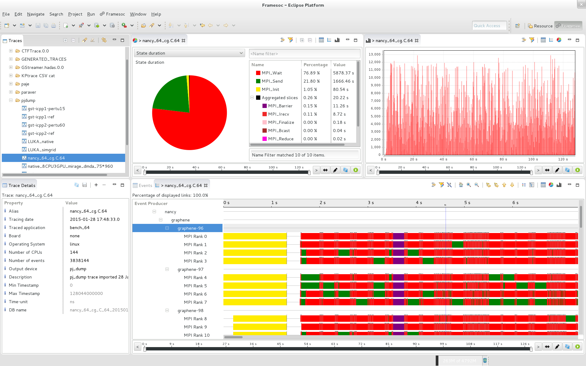

Framesoc
Framesoc is a generic trace management and analysis infrastructure.
Install Framesoc
Install Eclipse plugin version
To easily start playing with Framesoc, you can install its Eclipse plugin version.
If you don't already have a version of Eclipse installed, download it and install it on your machine.
Then, install Framesoc in Eclipse using the following procedure: Go to Help > Install New Software. In the new dialog, put the following URL in the field Work with:
http://soctrace-inria.github.io/updatesite/
and press Enter. Framesoc, Framesoc Importers and other Framesoc tools should be available for installation. Select at least Framesoc and Framesoc Importers, then click on Next, Next, accept the license agreement, and finally click on Finish.
Get the Sources
Framesoc source code is available on GitHub.
If you want to setup a development environment to hack the code, follow this procedure.
User and Developer Guide
The Framesoc User Guide can be downloaded here.
The Framesoc GitHub wiki pages are available here
External modules
- Ocelotl, an analysis tool providing multidimensional overviews for huge traces.
Support and Contact
You can contact us by email:
Generoso Pagano, Damien Dosimont, Youenn Corre, (replace -at- with @)
or follow us on github.
License
Framesoc is based on the Eclipse framework and it is released under the EPL (Eclipse Public License) v 1.0. The legal documentation has been written following the guidelines specified here.